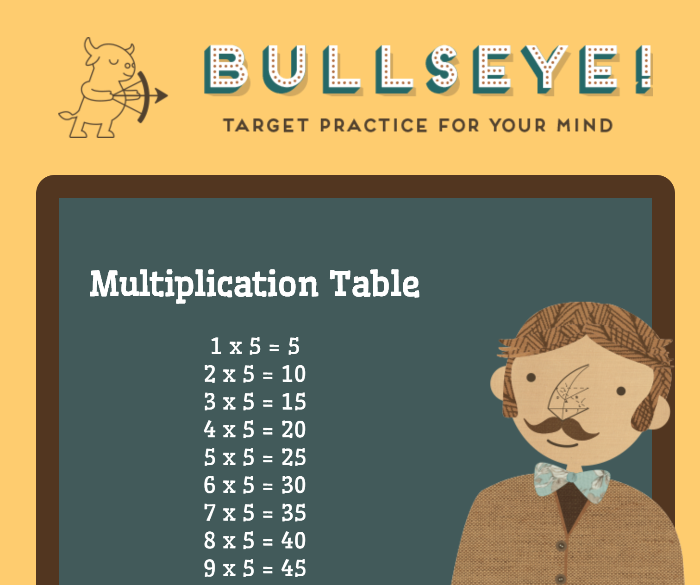

Module 1: Recipes
Module 1: Recipes - This module covers the creation of a simple HTML page to display various recipes.
View AssignmentModule 2: Meal Planner
Module 2: In this assignment, we applied our knowledge to design tables that effectively display information for a meal planner.
View AssignmentModule 3: The Cottage Garden
Module 3: In this assignment, we utilized an external CSS file to style the content within an HTML document. The task involved incorporating external fonts, modifying heading styles and colors, and learning how to validate the CSS code.
View AssignmentWeb Styling Essentials

In the "Web Styling Essentials" project, the student showcased their CSS skills by styling an HTML document with external fonts, customized headings, and a horizontal menu. They also structured the content using <div> tags and validated the CSS to ensure it met web standards. This work highlights their proficiency in practical web design techniques.
View AssignmentMultiplication Table
In the "JavaScript Foundations" project, we will create our first JavaScript program. This involves writing a script that prompts us to enter a number from 0-10 and then displays a multiplication table based on the entered number. We will apply key programming concepts such as variables, loops, and user input handling. While input validation is optional, it is encouraged. Additionally, we will document our code thoroughly using JavaScript comments to enhance readability and maintainability. This assignment is an exercise in understanding and implementing basic JavaScript functionalities.
View AssignmentHotel Room

This module covered objects and native objects in JavaScript. In this simple assignment, we modified existing code and added a new object to the page
View AssignmentShopping List
For this assignment, we applied our knowledge of the DOM and event handling to insert a new item into an existing list.
View AssignmentInteractive Dot Drawing
For this task, we started with a base code to explore event propagation and learned how to alter the default behavior of events.
View Assignment